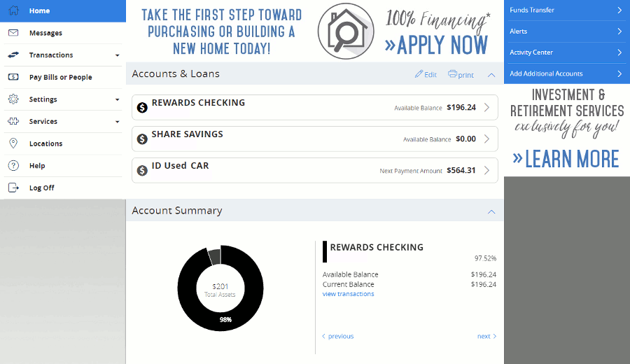

<!-- Beginning of CoffeeCup Image Map -->

<map name="main">
{% include top-level.html %}
  <area {{ site.opentip }} name="Account Summary" shape="rect" coords="181,283,717,517" href=""  alt="Shows the selected account information and how it relates to all your other accounts." data-ot="Shows the assets and debts summary wheel based on your accounts and loans.">
  <area {{ site.opentip }} name="Funds Transfer" shape="rect" coords="720,0,899,30" href=""  alt="Transfer funds between your accounts" data-ot="Transfer funds between your accounts">
  <area {{ site.opentip }} name="Alerts" shape="rect" coords="719,30,899,60" href=""  alt="Manage alerts for your various accounts" data-ot="Manage alerts">
  <area {{ site.opentip }} name="Activity Center" shape="rect" coords="720,60,898,90" href=""  alt="See your activity on your accounts" data-ot="See your online activity">
  <area {{ site.opentip }} name="Add Additional Accounts" shape="rect" coords="720,90,899,120" href=""  alt="Add other accounts to be managed via AFCU Online Banking." data-ot="Open new accounts online">
</map>
<!-- End of CoffeeCup Image Map -->
